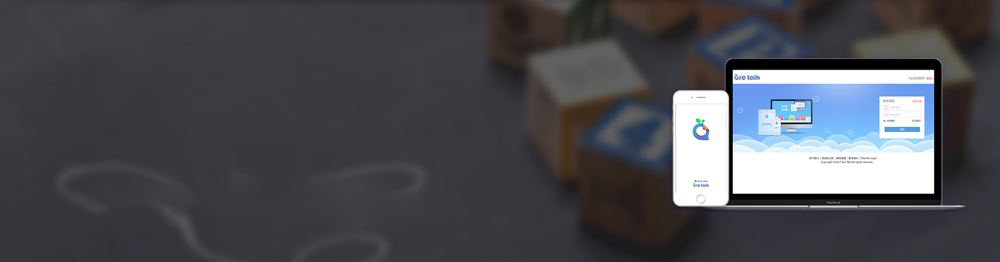

Windows
iPhone
Android
Windows系统客户端下载 版本说明：支持在线上课，预习复习点读，查看课程表，预约外教辅修课. 大小：90MB 适应系统：windows /win7/win8/win10 版本：are talk v1.2.0 - 上课软件 更新时间：2016.11.27
下载Windows客户端
iPhone 客户端下载 版本说明：支持预习复习点读，查看课程表，预约外教辅修课，实时监控孩子上课。 软件系统：iOS 8.2 或更高版本 下载方法一：在 App Store 中搜索 “aretalk” 下载 下载方法二：扫一扫二维码下载
安卓客户端下载 版本说明：支持预习复习点读，查看课程表，预约外教辅修课，实时监控孩子上课。 软件系统：Android 系统4.0以上 下载方法一：下载到本地 下载方法二：扫一扫二维码下载
.
其他工具下载
Microsoft.NET Framework 4.5
支持Win7，Win8系统，WinXP暂时不支持。此软件需要Microsoft .net framework v4.0 插件支持,若系统没有需要下载安装。
下载Microsoft.NET Framework4.5
FlashPlayer 22
可以更好的支持Flash版本教室
下载FlashPlayer 22